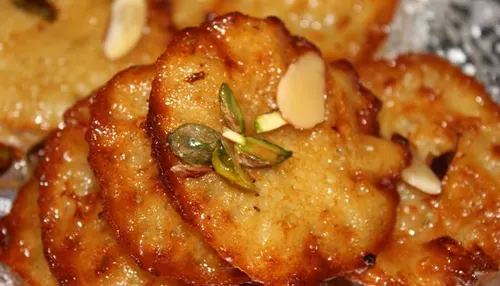
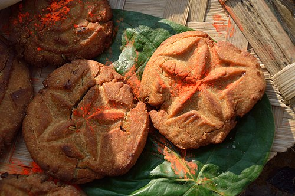

Bihar is not only famous for its history but also for its mouth-watering traditional cuisine...
1. Litti Chokha - Signature dish of Bihar.

Litti Chokha is the most famous dish of Bihar.
Litti Chokha is the proud signature dish and culinary identity of Bihar. Littis are smoky, baked whole wheat dough balls stuffed with a flavorful mixture of spiced sattu (roasted gram flour), mixed with mustard oil and pickle spices, then dipped in pure ghee. It is traditionally served with Chokha, a delicious mash of roasted brinjals, tomatoes, and potatoes cooked over an open fire, making it a healthy and rustic treat.
It is a dish that reflects the simplicity and richness of Bihari cuisine, often enjoyed with a dollop of ghee and accompanied by pickles or chutneys.
2. Naushahi / Silao ka Khaja - Sweet delicacy of Bihar.

Naushahi, also known as Silao ka Khaja, is a traditional sweet delicacy from Bihar. It is made from layers of thin dough that are deep-fried and then soaked in sugar syrup, resulting in a crispy and sweet treat. This dessert is often enjoyed during festivals and special occasions, and it holds a special place in the hearts of Bihari people.
Naushahi is known for its unique texture and rich flavor, making it a favorite among locals and visitors alike. It is often served with tea or as a dessert after meals, and its preparation is considered an art form, passed down through generations.
In Bihar, Naushahi is not just a sweet; it is a symbol of celebration and togetherness, often shared among family and friends during festive times.
3. Malpua - Popular dessert in Bihar.

Malpua is a popular dessert in Bihar, especially during festivals and special occasions. It is a sweet pancake made from a batter of flour, milk, and sugar, often flavored with cardamom and sometimes garnished with nuts. The batter is deep-fried to create a golden-brown treat that is crispy on the outside and soft on the inside.
Malpua is often served with rabri, a thickened sweetened milk, enhancing its rich flavor. It is a beloved dessert that brings joy to celebrations and is cherished by people of all ages in Bihar.
In Bihar, Malpua is not just a dessert; it is a symbol of festivity and togetherness, often enjoyed with family and friends during special occasions.
4. Dahi Chuda - Yummy yogurt-based dish.

Dahi Chuda is a traditional Bihari dish made from flattened rice (chuda) mixed with yogurt (dahi) and often sweetened with jaggery or sugar. It is a simple yet delicious dish that is commonly consumed as a breakfast or snack. The combination of the soft, tangy yogurt with the crunchy flattened rice creates a delightful texture and flavor.
Dahi Chuda is not only tasty but also nutritious, providing a good balance of carbohydrates and protein. It is a popular dish during the summer months, as it is light and refreshing, making it a favorite among the people of Bihar.
In Bihar, Dahi Chuda is more than just a dish; it is a part of the local culinary tradition, often enjoyed with family and friends, and is a testament to the simplicity and richness of Bihari cuisine.
5. Sattu Paratha - Nutritious flatbread.

Sattu Paratha is a nutritious flatbread made from roasted gram flour (sattu) mixed with spices and stuffed into whole wheat dough. It is then rolled out and cooked on a griddle until golden brown. Sattu Paratha is a popular dish in Bihar, known for its high protein content and energy-boosting properties.
This dish is often served with yogurt, pickles, or chutneys, making it a wholesome meal. Sattu Paratha is not only delicious but also a staple in the Bihari diet, especially during the summer months, as it helps in keeping the body cool and hydrated.
In Bihar, Sattu Paratha is more than just a meal; it is a reflection of the local culinary heritage, cherished for its taste, nutrition, and cultural significance.
6. Thekua - Traditional sweet of Bihar.

Thekua is a traditional sweet from Bihar, often prepared during festivals and special occasions. It is made from whole wheat flour, jaggery, and ghee, shaped into small discs or squares, and deep-fried until golden brown. Thekua has a unique texture that is both crispy on the outside and soft on the inside, with a rich, sweet flavor.
This sweet is not only delicious but also holds cultural significance, especially during the Chhath Puja festival, where it is offered to the Sun God as a symbol of devotion and gratitude. Thekua is a beloved treat in Bihar, enjoyed by people of all ages and cherished for its taste and traditional value.
In Bihar, Thekua is more than just a sweet; it is a representation of the region's culinary heritage, passed down through generations and celebrated for its unique flavor and cultural importance.
7. Chana Ghugni - Spicy black chickpea snack.

Chana Ghugni is a highly popular and spicy evening snack or breakfast dish in Bihar. It is made from black chickpeas (kala chana) slow-cooked with a rich blend of onions, tomatoes, and local spices like roasted cumin and garam masala. It is traditionally garnished with fresh coriander, green chilies, and served hot along with roasted flattened rice (Bhuja) or Kachoris.
Chana Ghugni is not only delicious but also a nutritious dish, providing a good source of protein and fiber. It is often enjoyed during the winter months, as it is warming and hearty, making it a favorite among locals and visitors alike.
In Bihar, Chana Ghugni is more than just a snack; it is a reflection of the region's culinary diversity and a testament to the rich flavors and spices that define Bihari cuisine.
8. Sattu Sharbat - The ultimate natural energy drink.

Sattu Sharbat is the ultimate, refreshing summer drink and a natural energy booster native to Bihar. Made by mixing roasted gram flour (sattu) with chilled water, fresh lemon juice, black salt, and roasted cumin powder, it comes in both savory and sweet versions. The savory version is often garnished with finely chopped onions, green chilies, and coriander, making it a healthy, high-protein drink that keeps the body cool.
Sattu Sharbat is not only a thirst-quencher but also a traditional remedy for heat exhaustion, making it a staple during the hot summer months in Bihar. It is cherished for its simplicity, nutritional value, and ability to provide instant energy.
In Bihar, Sattu Sharbat is more than just a drink; it is a symbol of the region's culinary ingenuity, reflecting the local culture and lifestyle, and is enjoyed by people of all ages for its refreshing taste and health benefits.
9. Bihari Khichdi - The Saturday special comfort food.

Bihari Khichdi is not just a dish, but a Saturday ritual in almost every Bihari household. Unlike regular dry khichdi, it has a semi-liquid consistency made by cooking rice and moong dal together with ghee, ginger, turmeric, and minimal spices. It is famously served as a grand platter complete with its four mandatory companions, perfectly captured in the local saying: "Khichdi ke chaar yaar—Dahi, Papad, Ghee aur Aachar," along with a side of freshly mashed Chokha.
Bihari Khichdi is more than just comfort food; it is a culinary tradition that brings families together, especially on weekends. The dish is cherished for its simplicity, nutritional value, and the warmth it brings to the dining table. It is often enjoyed with a dollop of ghee and accompanied by pickles or chutneys, making it a wholesome and satisfying meal.
In Bihar, Bihari Khichdi is a symbol of home-cooked goodness, reflecting the region's culinary heritage and the importance of family meals in Bihari culture.
10. Sitamarhi ki Balushahi - The traditional flaky sweet donut.

Balushahi is a legendary sweet dish of Bihar, with the town of Runni Saidpur in Sitamarhi being globally famous for it. Often described as the Indian equivalent of a glazed donut, it is made of refined flour dough mixed with ghee, shaped into rounds with a dimple in the center, and deep-fried on a very low flame until flaky. It is then soaked in sugar syrup, resulting in a sweet that is beautifully crisp on the outside and delightfully juicy inside.
Balushahi is not just a dessert; it is a cultural icon in Bihar, often enjoyed during festivals and special occasions. Its unique texture and rich flavor make it a favorite among locals and visitors alike. The preparation of Balushahi is considered an art form, passed down through generations, and is a testament to the culinary heritage of Bihar.
In Bihar, Balushahi is more than just a sweet; it is a symbol of celebration and togetherness, often shared among family and friends during festive times, and cherished for its traditional value and exquisite taste.